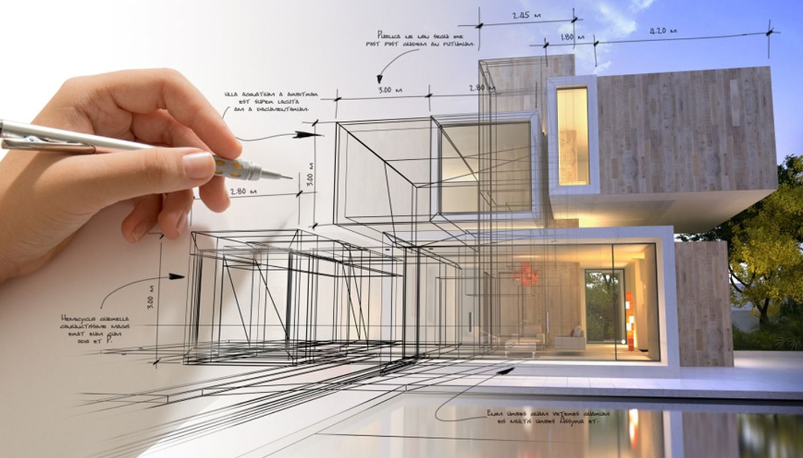

Intro
|
 |
John Riley
Free Code Camp Columbus co-admin
|
### Share Your Experience
---
 #panel-questions
#panel-questionshttps://forum.freecodecamp.org/
### We are artists!
---

### Better yet...We are architects!
---

### Our craft is organized
---
### Our solutions give us power!
---

### We have some needs
---
Secure backups
Take a snapshot of our canvas
Easily retrieve previous snapshots

Has a small footprint

Work with our fellow superheroes
## Our superpower
---
Poll: Let's take a poll
1. What is Git?
### What is Git?
---
More facts...
Surprisingly...

### Basic concepts
---
Repository (.git directory)
Main data store of changes

Git thinks about its data as a stream of snapshots

- https://www.git-scm.com/book/en/v2/Getting-Started-What-is-Git
Working directory / Working tree
A single version of the project files for you to use or modify.
Staging area
Stores information about what will go into your next "commit"
A commit
A permanent snapshot of your changes from the staging area
Git workflow

- https://www.git-scm.com/book/en/v2/Getting-Started-What-is-Git
2. Rank the practices of git that you would like to learn more about (0-9, 9 is most important)
This is your opinion
11 users voted
### When things get exciting
---
Branches
diff

Remotes

Source Code hosting Facilities (A Forge)
IDE Integration
### Next Steps
---
Download the command line version...
https://git-scm.com/downloads* also find some GUI clients here
To get started locally...
> git init
Results of the poll
Results will be posted here later
Let's take some time to review the results
### Thank you!
---